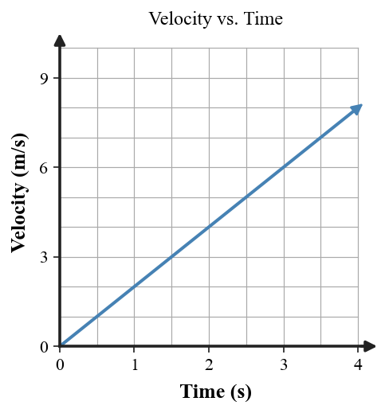
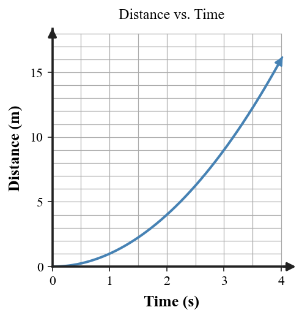
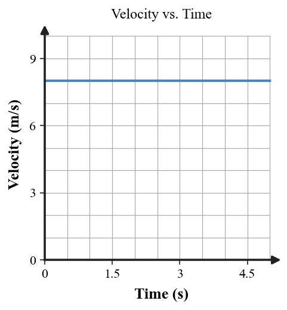
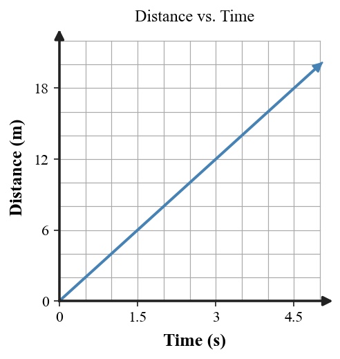
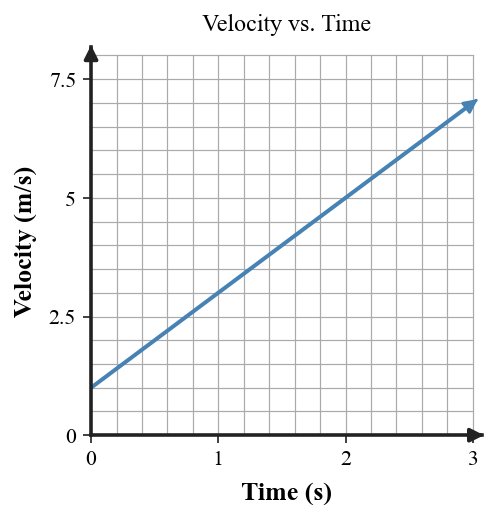
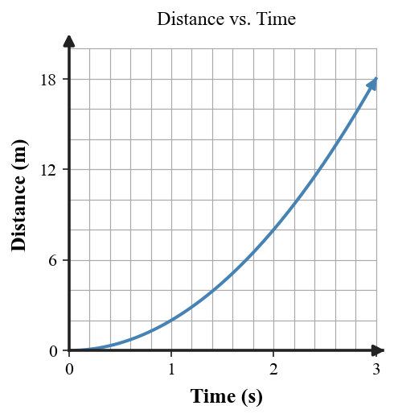

| 1A backpack rests on a train seat while the train moves past a station. Is it moving or at rest relative to the seat? Relative to the platform? | 2In the statement “The elevator rises past the third-floor doorway,” what is the reference frame? |
| 3A seated bus passenger says a bag is at rest; a road observer says it is moving. Compare the two descriptions by naming each reference frame. | 4Why is Earth’s surface usually the unstated reference frame when a runner’s speed is reported? |
| 1A laptop stays on an airplane tray while the plane taxis. Describe the laptop relative to the tray and relative to the terminal. | 2Identify the reference frame: “The ferry moves past the lighthouse.” |
| 3Two observers disagree about a traveler standing still on a moving walkway. One says the traveler is at rest; the other says the traveler is moving. Identify each observer’s likely reference frame and justify how both claims can be correct. | 4A student is at rest relative to a classroom desk but moving relative to the Sun. Why can both statements be correct? |
| 1A drone stays directly above the same point on a boat moving downstream. Is the drone at rest or moving relative to the boat? Relative to shore? | 2A coach says, “The runner moves 7 m/s around the track.” What reference frame is normally implied? |
| 3A cup remains in a car holder. One observer is inside the car; another stands beside the road. Explain why they can give different motion descriptions. | 4Why is the ground a convenient everyday reference frame but not an absolute or only valid reference frame? |
| 1A runner covers 180 m in 15 s. Calculate the average speed. | 2A dashboard reads 72 km/h right now; the trip computer shows 48 km/h for the whole trip. Which is instantaneous speed and which is average speed? |
| 3Classify each description: “9 m/s” and “9 m/s west.” Which is speed and which is velocity? | 4A car circles a track at a steady 20 m/s. Is its speed constant? Is its velocity constant? Explain using direction. |
| 1A delivery robot travels 240 m in 20 s. Determine its average speed. | 2A car’s speedometer reads 50 km/h now, while its trip average is 35 km/h. Explain what each value measures. |
| 3Cyclist A moves 6 m/s east; Cyclist B moves 6 m/s west. Compare their speeds and their velocities. | 4Classify: (1) 15 m/s east on a straight road, (2) 15 m/s around a curve, (3) speeding up east. Which has constant velocity, constant speed only, or changing speed? |
| 1A cyclist travels 600 m in 120 s, then 900 m in 180 s. Find the average speed for the entire trip using total distance and total time. | 2Two trips each cover 60 km in 1 h. One includes a 10-minute stop. Compare their average speeds and explain which trip must have a higher instantaneous speed at some time. |
| 3A student claims, “If two objects have the same speed, they must have the same velocity.” Explain the misconception and revise the statement so it is scientifically correct. | 4A train moves straight east at 18 m/s for 5 s; a second vehicle turns while staying at 18 m/s. Compare their speed and velocity changes. |
| 1A cart changes velocity from 2 m/s to 14 m/s in 4 s. Find Δv, then calculate acceleration. | 2A cyclist changes from 8 m/s north to 8 m/s west. Did speed change? Did velocity change? Was there acceleration? |
| 3East is positive. A cyclist changes from +12 m/s to +4 m/s. Is the acceleration positive, negative, or zero? Explain from the velocity change. | 4Use the velocity–time graph. Describe the acceleration and cite one graph feature as evidence.  |
| 1A cart changes velocity from 3 m/s to 9 m/s in 2 s. Calculate its acceleration. | 2A student argues that a car moving around a curve at a steady 14 m/s cannot be accelerating because its speed is constant. Use the velocity-vector evidence to evaluate the claim and correct the reasoning. |
| 3A train remains at +8 m/s for an entire interval. Classify its acceleration as positive, negative, or zero. | 4The distance–time graph becomes steeper. What happens to speed, and what does that imply about the object’s motion?  |
| 1A cyclist changes from +12 m/s to +4 m/s in 4 s. Calculate Δv and acceleration. | 2A bus moving west slows from 18 m/s to 10 m/s without turning. Identify how its velocity changes and why it is accelerating. |
| 3East is positive. Velocity changes from −4 m/s to −10 m/s in 3 s. Is acceleration positive or negative? Is the object speeding up or slowing down? | 4Use the velocity–time graph. Determine the acceleration and explain how the graph shows it.  |
| 1A heavy ball and a light ball are dropped together in a vacuum. Compare their free-fall accelerations and explain why. | 2A rock is dropped from rest for 3 s. Using g ≈ 10 m/s², determine its speed. | ||||||||
3A freely falling object is 5 m, 20 m, and 45 m below its start after 1, 2, and 3 s. How far does it travel during the second second and during the third second?
| 4Classify each: a coin falling in a vacuum; a flat sheet of paper falling through air. Which is free fall under the model used in this unit? |
| 1A bowling ball and tennis ball are released together in a vacuum. What value of gravitational acceleration does each have near Earth? | 2A ball is dropped from rest for 4.5 s. Use g ≈ 10 m/s² to determine its speed. |
| 3A dropped object falls 20 m in 2 s and 80 m in 4 s. How many times greater is the 4-s distance? What pattern does this illustrate? | 4Which is free fall: a rock after release with air resistance ignored, or a skydiver descending with an open parachute? Give the reason. |
| 1Two different-mass balls with similar shapes are released in a vacuum. Predict how their speeds change each second and explain. | 2A dropped object has been in free fall for 5 s. Ignore air resistance. Determine its speed. | ||||||||
3Total free-fall distances are 5 m after 1 s, 20 m after 2 s, and 45 m after 3 s. Determine the distance traveled during the third second.
| 4A student says, “The crumpled paper lands first, so gravity must accelerate it more than the flat sheet.” Critique the claim using air resistance and predict what would happen in a vacuum. |
| 1The arrows use the same scale. Which object has the greater speed? How do you know from the vector model? | 2Two successive velocity arrows have equal length; one points east and one north. Compare speed and velocity. | ||||||||||||
3A table shows distances 0, 3, 6, 9, 12 m at one-second intervals. Describe the matching motion-diagram spacing and distance–time graph.
| 4A motion diagram has growing dot gaps, but the written story says “constant speed.” Identify the mismatch and state one valid revision. |
| 1A vector scale is 1 cm = 5 m/s. An arrow is 4 cm long and points north. State the represented velocity. | 2A velocity arrow doubles in length but keeps the same direction and scale. What changed: speed, direction, velocity, or more than one? | ||||||||||
3Distances are 0, 1, 4, 9 m at 0, 1, 2, 3 s. Describe the matching dot-spacing pattern and how a distance–time graph should change.
| 4The graph is a straight distance–time line, but a student writes “the object speeds up.” Critique the statement and revise it.  |
| 1Two velocity vectors have the same length and point in the same direction on the same scale. What can you conclude about the velocities? | 2Successive equal-length velocity arrows rotate around a turn. What stays constant, what changes, and what does that say about velocity? | ||||||||||||||||||||
3The table and graph show velocity increasing by 2 m/s each second. Write the matching motion description.
 | 4The table and graph show the same motion, but the story says “the cart travels equal distances each second.” Identify the conflict, cite two pieces of evidence, and revise the story.
 |